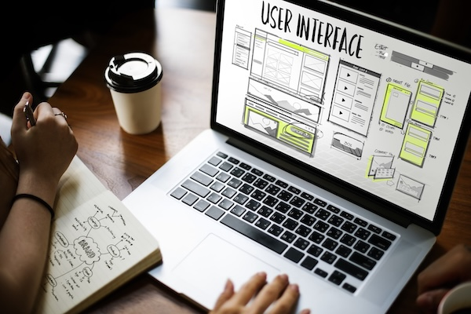

Sobre mí
Mi nombre es Gina Rolandi y nací el 8 de Mayo del 95 en La Plata.
A los 8 años me fuí a vivir a Costa Rica con mi familia, y desde hace ya 4 años que vivo en España.
Soy Ingeniera en Diseño Idustrial, y me decidí realizar el curso de Front End para complementar mis conocimientos como diseñadora UX/UI y hacer mi perfil profecional mas competitivo.
Habilidades
-
Diseño de producto:
- Investigación
- Conceptualización
- Creación de prototipos (ej: Impresión 3D)
- Validación

Ejemplo del proceso de diseño de un producto -
Diseño UX/UI:
- Diseño visual y Mockups:
- Diseño de sistemas (Design Systems)
- Investigación de usuarios
- Arquitectura de la información
- Flujos de usuario (User Flows)
- Wireframing
- Prototipado interactivo

Ejemplo de un diseño de una interfáz